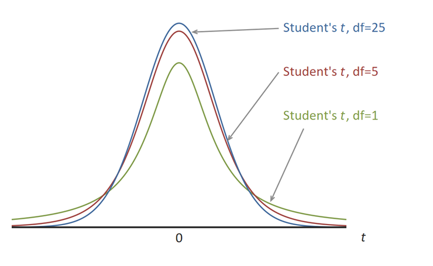

Student's t Distribution
Menu location: Analysis_Distributions_Student's t.
Student's t is the distribution with n degrees of freedom of :
- where z is the standard normal variable and χ² is a chi-square random variable with n degrees of freedom.
When n is large the distribution of t is close to normal. The largest differences between standard normal and t distributions occurs in the tails which is the most important area in statistical tests. You can see from the diagram below that a t distribution with fewer degrees of freedom has more of its values in the tails:

For samples from a normal distribution, the ratio of the mean and its standard error follow a t distribution. The number of degrees of freedom used should be equal to the sample size minus the number of estimated parameters. In t tests the estimated parameter is the standard deviation about the mean, therefore, degrees of freedom are n-1.
This family of distributions is associated with W. S. Gosset who, at the turn of the century, published his work under the pseudonym Student.
Technical Validation
StatsDirect uses the relationship between Student's t and the beta distribution in its calculation of tail areas and percentage points for t distributions. Soper's reduction method is used to integrate the incomplete beta function (Majumder and Bhattacharjee, 1973a, 1973b; DiDonato and Morris, 1992). A hybrid of conventional root finding methods is used to invert the function. Conventional root finding proved more reliable than some other methods such as Newton Raphson iteration on Wilson Hilferty starting estimates (Berry et al., 1990; Cran et al., 1977). StatsDirect does not use the beta distribution for the calculation of t percentage points when there are 60 or more degrees of freedom (n) (Hill 1970), when n is 2 then t=sqr(2/(P*(2-P))-2) and when n is 1 then t=cos((P*π)/2)/sin((P*π)/2), where P is the two sided probability.
Function Definition
The distribution function of a t distribution with n degrees of freedom is:
Γ(*) is the gamma function:
A t variable with n degrees of freedom can be transformed to an F variable with 1 and n degrees of freedom as t²=F. An F variable with ν1 and ν2 degrees of freedom can be transformed to a beta variable with parameters p=ν1/2 and q= ν2/2 as beta = ν1F/(ν2+ν1F). The beta distribution with parameters p and q is:

Example
An illustration with chosen figures. Select Student's t from the Distributions section of the Analysis menu, enter 2 as Student's t and 10 as the degrees of freedom, then click Calculate. StatsDirect fills the upper tail, lower tail and two tailed P boxes; when you complete the calculator the report reads:
Probability distribution calculations
P(t 2, df 10) = 0.03669401738537 upper, 0.96330598261463 lower, 0.07338803477074 two sided
So, when the null hypothesis holds, a t statistic of 2 or more arises by chance in about 3.7% of samples, and a t of 2 or more in either direction in about 7.3%. The two tailed P is twice the smaller tail. The distribution is symmetric, so a negative t swaps the tails: with -2.5 as Student's t and 15 degrees of freedom:
P(t -2.5, df 15) = 0.987747098376743 upper, 0.012252901623257 lower, 0.024505803246514 two sided
The function also works in reverse: enter a probability in one of the P boxes and click Invert, and StatsDirect finds the t that gives it. With 0.05 as the two tailed P and 10 degrees of freedom, the upper tail P becomes 0.025 and the report reads:
t(upper P 0.025, df 10) = 2.22813885198627
This is the critical value of t for a two sided test at the 5% level with 10 degrees of freedom, and the multiplier of the standard error in a 95% confidence interval based on 10 degrees of freedom.
The figures above were calculated in R with the functions shown below; StatsDirect calculates the same values and shows them to the same 15 decimal places (15 significant figures for t).
This R code reproduces the illustration above. It needs no packages and was checked with R 4.6.1. Paste it into R, or save it as a script and run it.
# Student's t distribution: the StatsDirect help illustration (tail areas for t = 2
# with 10 degrees of freedom and for t = -2.5 with 15, then the t with an upper tail
# of 0.025 for 10 degrees of freedom, the 5% two sided critical value) in R
# StatsDirect's calculator shows tail areas to 15 decimal places and t to 15
# significant figures; these helpers print R's values the same way.
p15 <- function(p) formatC(p, digits = 15, format = "f", drop0trailing = TRUE)
t15 <- function(x) formatC(x, digits = 15, format = "g", drop0trailing = TRUE)
# Tail areas from t: pt() gives the lower tail P(T <= t) by default, and the upper
# tail P(T > t) with lower.tail = FALSE. The two sided P is twice the smaller tail.
tails <- function(t, df) {
upper <- pt(t, df, lower.tail = FALSE)
lower <- pt(t, df)
cat("P(t ", t, ", df ", df, ") = ", p15(upper), " upper, ", p15(lower), " lower, ",
p15(2 * min(upper, lower)), " two sided\n", sep = "")
}
tails(2, 10)
tails(-2.5, 15) # a negative t: the distribution is symmetric, so the tails swap
# t from a tail area (the calculator's Invert): qt() gives the t below which a given
# area lies, so the t with 0.025 above it (0.05 in the two tails together) is
cat("t(upper P 0.025, df 10) =", t15(qt(0.025, 10, lower.tail = FALSE)), "\n")
# which is the same as qt(0.975, 10)